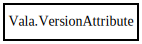

VersionAttribute
Object Hierarchy:

Description:
public class VersionAttribute
Represents a [Version] attribute
Content:
Properties:
- public bool deprecated { set; get; }
Specifies whether this symbol has been deprecated.
- public string? deprecated_since { set; owned get; }
Specifies what version this symbol has been deprecated since.
- public string? replacement { set; owned get; }
Specifies the replacement if this symbol has been deprecated.
- public bool experimental { set; get; }
Specifies whether this symbol is experimental.
- public string? experimental_until { set; owned get; }
Specifies until which version this symbol is experimental.
- public string? since { set; owned get; }
Static methods:
Creation methods:
Methods:
Fields: